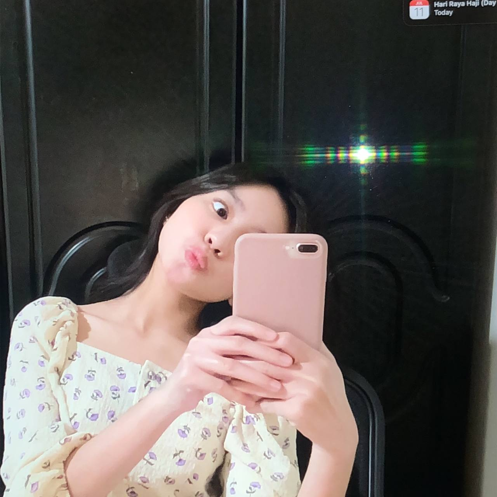

<!DOCTYPE html>
<html>
<head>
<title>about me</title>
	<link rel="stylesheet" href="aboutme.css">

</body>
</html>
</body>
</html>

</body>
</html>
</head>
<body>
<header>
<br>
<br>

</header>
<center>

<br>
<a href="index1.html"></a>
<a href="friends.html"></a>
<a href="family.html"></a>
<a href="education.html"></a>
<a href="gallery.html"></a>
<a href="favs.html"></a>
<h2>About me</h2>

<br>

<title>Deana's Biodata</title>
    <style>
        table {
            width: 50%;
            border-collapse: collapse;
            margin: auto; /* Center-align the table */
        }

        th, td {
            border: 1px solid #dddddd;
            text-align: left;
            padding: 8px;
        }

        th {
            background-color: #f2f2f2;
        }
    </style>
</head>
<body>

<br>
    <table>
        <tr>
            <th>Biodata</th>
            <th>Details</th>
        </tr>
        <tr>
            <td>Name</td>
            <td>Deana binti Roslan</td>
        </tr>
        <tr>
            <td>Age</td>
            <td>20</td>
        </tr>
        <tr>
            <td>Birth Order</td>
            <td>Second Child out of 4 siblings</td>
        </tr>
        <tr>
            <td>Height</td>
            <td>157 cm</td>
        </tr>
        <tr>
            <td>State</td>
            <td>Selangor</td>
        </tr>
        <tr>
            <td>Hobby</td>
            <td>Drawing</td>
        </tr>
    </table>
<br>
<p text-align: justify;> Salutations, I'm Deana, a proud Merbok inhabitant and committed student at UITM right now. In the family dynamic, I am the second child out of four siblings, and I distinctly play the role of the only daughter. The lack of a father figure has characterized my journey; this situation started when I was just 9 years old. Even if there have been difficulties along the way, I approach life with a strong sense of resolve and a dedication to finding comfort in the quest of pleasure.

My academic endeavors at UITM provide me direction and purpose, and they are a central focus in my life. Beyond academia, I find happiness in the simplicity of life's pleasures, and I recognize the importance of embracing optimism in the midst of life's complications. In the face of adversity, I have developed resilience and an unyielding drive to enjoy the bounty of life. May this journey be a tribute to perseverance, thankfulness, and an unwavering commitment to extracting joy from life's many events.<p>
<br>
<br>
<h1>My Video</h1>

<video src="video/mevid.mp4" width="650px" height="400px" controls autoplay
     
</video>


</body>

</html>